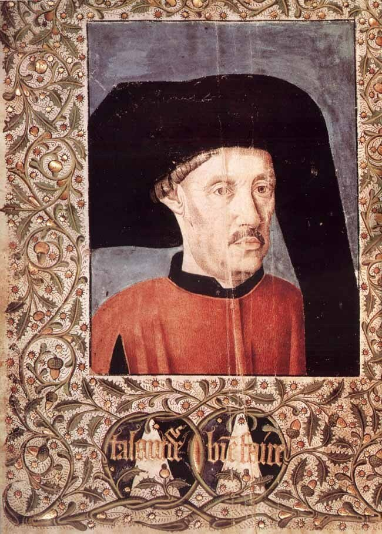
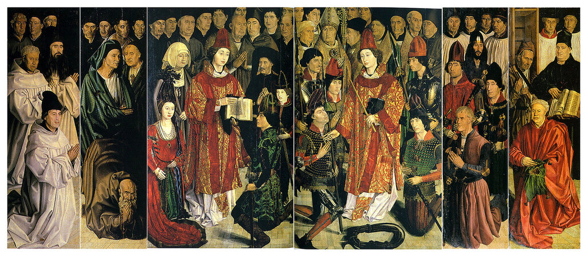
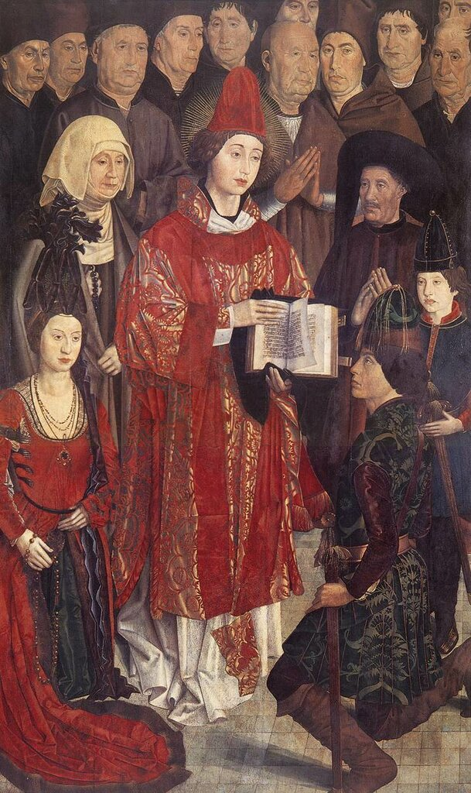
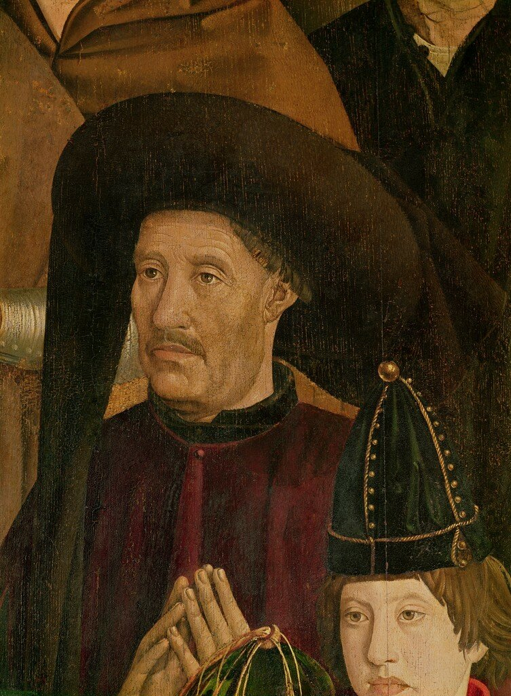
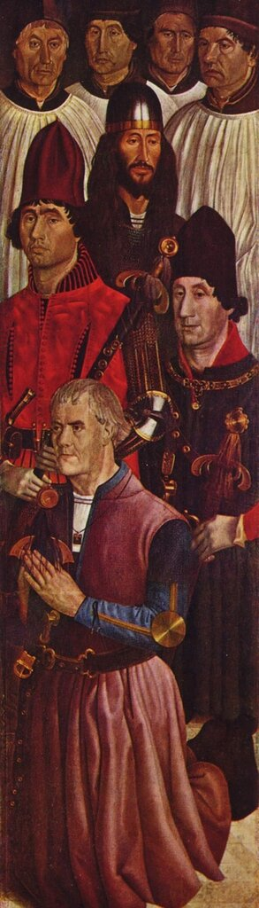
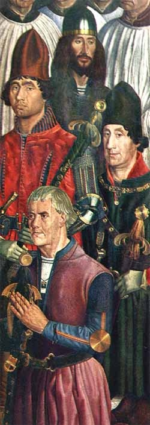
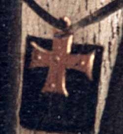
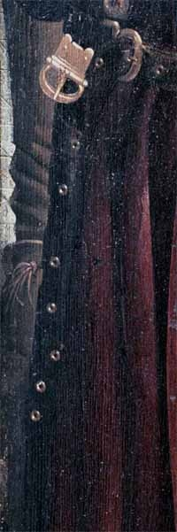
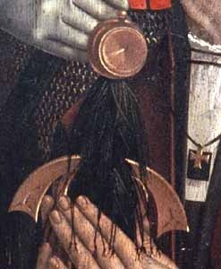

Портрет инфанта Энрике
Чей это, боже мой, портрет?
И. И. Дмитриев. Надпись к портрету (1803)
И сей портрет не будет верно ваш!
А. А. Дельвиг. К Е.А. Кильштетовой (1818)
Когда мы читали «Хронику» Гомиша Ианиша ди Зурара, положившую начало истории каравелл эпохи Великих географических открытий, мы привели портрет вдохновителя и организатора (не к ночи будет сказано) пионерских исследований моря-океана (Mare incognitum) португальского инфанта Генриха Мореплавателя. Этот портрет был приложен к так называемому парижскому экземпляру сочинения Зурара без уточнения, кто на нем изображен. Посчитали очевидным, что других вариантов, кроме как принять его за портрет инфанта, быть не может: ведь Генрих был фактически главным героем «Хроники».

Хроника впервые вышла в свет в 1453 году, портрет, как полагают искусствоведы, мог быть исполнен позже (он вставлен в качестве фронтисписа в экземляр хроники, хранящийся в Национальной библиотеке в Париже.)
На протяжении многих лет не возникало сомнений в том, что это действительно портрет португальского инфанта Энрике. Более того, версия эта, казалось, получила весомое подтверждение, когда в восьмидесятых годах XIX века в монастыре Сан-Висенте-де-Фора в Лиссабоне был обнаружен полиптих, посвященный покровителю португальской столицы Святому Викентию Сарагосскому (в настоящее время полиптих хранится в Национальном музее старинного искусства (Museu Nacional de Arte Antiga) в Лиссабоне).

Авторство произведения установили быстро. Все шесть панелей полиптиха были исполнены, как полагают, одним из первых португальских художников Нуну Гонсалвишем (Nuno Gonçalves). Даты его жизни точно не известны, считается, что он работал между 1450 и 1471 годами.
На третьей слева панели полиптиха, которую называют «Панель принцев», изображен человек, очень похожий на портрет из «Хроники» Зурара.


Имеется соблазн считать вновь обретенный образ человека, похожего на Генриха Мореплавателя, каноническим изображением инфанта. Перед этим соблазном не устояли целые поколения историков, так или иначе касавшихся в своих работах деяний португальского принца. Образы из «Хроники» и с «панели принцев» были растиражированы невообразимо
Но настоящие исследователи тем и отличаются от поверхностных дилетантов (к коим я отношу и себя), что их всегда гложет червь сомнения. Эти исследователи поставили перед собой несколько простых вопросов. Что за события изображены на панелях из монастыря Св. Винсента.? Кто те шестьдесят персонажей, которые здесь присутствуют? Каково значение многочисленных символов, показанных здесь и там на панелях? Кто был заказчиком этой работы?
Окончательных ответов на эти вопросы не получено до сих пор. Однако есть консенсус по некоторым из них. Большинство ученых сходятся на том, что на панелях изображено несколько социальных групп португальского общества XV века. И что на них присутствуют дети короля Португалии Жуана I. Правда, не удается понять, who из них who.
Нас, конечно же, сразу привлекает «Панель принцев». Человек в черном, с небольшими усами, в черном круглом шапероне на голове удивительно напоминает известные изображения Генриха Мореплавателя (мы используем здесь это известное имя, которое дано было принцу Энрике в XIX веке немецкими историками Heinrich Schaefer и Gustav de Veer и в дальнейшем было закреплено трудами английских биографов инфанта Генри Майжора (1868) и Раймонда Бизли (1895). У португальцев инфанта обычно называют Infante D. Henrique) Но мы должны отдавать себе отчет, что достоверных портретов инфанта не сохранилось. Ни одного. Портрет из «Хроники» Зурара не подписан. Единственный признак, который может свидетельствовать о том, что этот портрет имеет отношение к Генриху – приведенный под портретом девиз: talent de bien faire на фоне двух пирамид, который уверенно считают девизом инфанта Энрике.
О девизе этом мы еще поговорим дальше, а сейчас вернемся к портрету. Мы должны учитывать, что основная, решающая часть первых походов вдоль западного берега Африки была совершена при правлении короля Португалии Дуарте I. Поэтому была выдвинута гипотеза, что в «Хронике» Зурара помещен портрет именно короля, а не его брата Энрике. Подобная практика изображать монархов в хрониках той поры была вполне естественна.
Если мы примем эту альтернативную точку зрения, то легче будет расшифровать изображение на «Панели принцев»: на ней изображены только коронованные особы, и это не «панель принцев», а «панель королей». При этой версии человек в черном шапероне – это король Дуарте, симметрично которому находится изображение его жены - королевы Элеоноры Арагонской. Под ними изображены на коленях их сын, король Португалии Афонсу V и его супруга, королева Изабелла Коимбрская. Ребенок же на изображении – это будущий король Жуан II. Такая интерпретация значительно проще, чем в случае, если считать человека в черном принцем Энрике. Приняв последний вариант, мы не сможем установить, что за дама расположена в левой части панели. Принц Энрике был, как известно, холост. Если дама – это его мать Филиппа, то почему отсутствует здесь ее супруг, король Жуан I? Если сестра Изабелла, герцогиня Бургундская, то почему она вообще находится здесь, тем более без своего супруга. И почему эта странная пара помещена над изображениями короля и королевы и где тогда искать родителей царственной пары? Все вконец запутано, не сравнить с предыдущей гипотезой, предполагающей присутствие на панели лишь коронованных особ.
Но если человек в черном – это не принц Энрике, то где же он? Обратимся к пятой панели полиптиха – «Панели рыцарей».

Приведем также ее фрагмент, с лучшей цветопередачей. А цвет, как мы увидим позже, имеет значение.

Согласно альтернативной интерпретации изображений на полиптихе, которая отрицает присутствие инфанта Энрике на «Панели принцев», инфант находится именно на «Панели рыцарей», в группе четырех младших братьев короля Португалии Дуарте.
Человек в зеленой одежде справа – это младший брат короля инфант Педру (герцог Коимбра, регент короля Афонсу V). На нем мы видим цепь ордена Подвязки, кавалером которого Педру был.
Слева, в красных одеждах, инфант Жуан (констебль Португалии, магистр Ордена Сантьяго). Манера держать меч за лезвие, которую мы видим здесь, была характерна для изображений кавалеров этого ордена.
В верхней части четырехфигурной композиции изображен человек в черных одеждах и шлеме – инфант Фернандо, великий магистр Ависского ордена. В 1437 году он участвовал вместе с братьями в походе в Северную Африку и попал в плен. Мусульмане предложили освободить его в обмен на возвращение им Сеуты, однако и сам принц, и его старший брат инфант Энрике не пошли на эту сделку. Фернандо оставался пленником до своей смерти в 1443 году, впоследствии был объявлен Святым.
В нижней части композиции находится человек в фиолетовой одежде. В рассматриваемой версии это и есть инфант Энрике, Генрих Мореплаватель. Он стоит на коленях, на шее – символ ордена Христа,великим магистром которого Энрике был. Лицо этого седовласого уже человека сильно отличается от всех его изображений в исторической литературе. И его поза, и небрежности в одежде подчеркивают стремление художника унизить свою модель.
Чем Генрих Мореплаватель мог заслужить такое к себе отношение?
Можно предположить, что поводом стало его присоединение к выступлению Альфонса I, герцога Браганса (Афонсу Португальского, внебрачного сына короля Жуана I ) против регента Педру, единокровного брата Энрике. Поэтому и изображен Энрике на коленях, словно просит прощения у своего убитого в этой междоусобице брата. Символ ордена Христа на груди поврежден

Ремень портупеи расстегнут

Дырки на ремне расположены в каком-то странном беспорядке.
Навершие эфеса меча закручено относительно плоскости, в которой находится гарда, лезвие выглядит тупым и неухоженным (при том что лезвия у оружия его братьев сияют). Кисть темляка из черных спутанных нитей, тогда как кисти на оружии братьев Энрике – из золотых и серебряных шнуров.

Можно привести еще много других деталей, унижающих инфанта, делающих из него персонажа, вымаливающего прощения у семьи. Приведем еще лишь один символ, который должен подчеркнуть положение Энрике. Цвет одежды принцев на этой панели играет в этом основную роль. Он подчинен значению литургических цветов в обряде католической церкви. Черный цвет у Фернандо – цвет траура и скорби, зеленый у Педру – цвет обыденной службы, красный у Жуана – пассионарности и жертвенности, фиолетовый у Энрике – цвет покаяния и смирения.
Не знаю, какому из вариантов портрета Генриха Мореплавателя отдать предпочтение, но, думаю, знать интересно оба.
(При написании этого поста были использованы статьи из английской и португальской Википедии а также материалы сайта PAINÉIS DE S. VICENTE DE FORA )